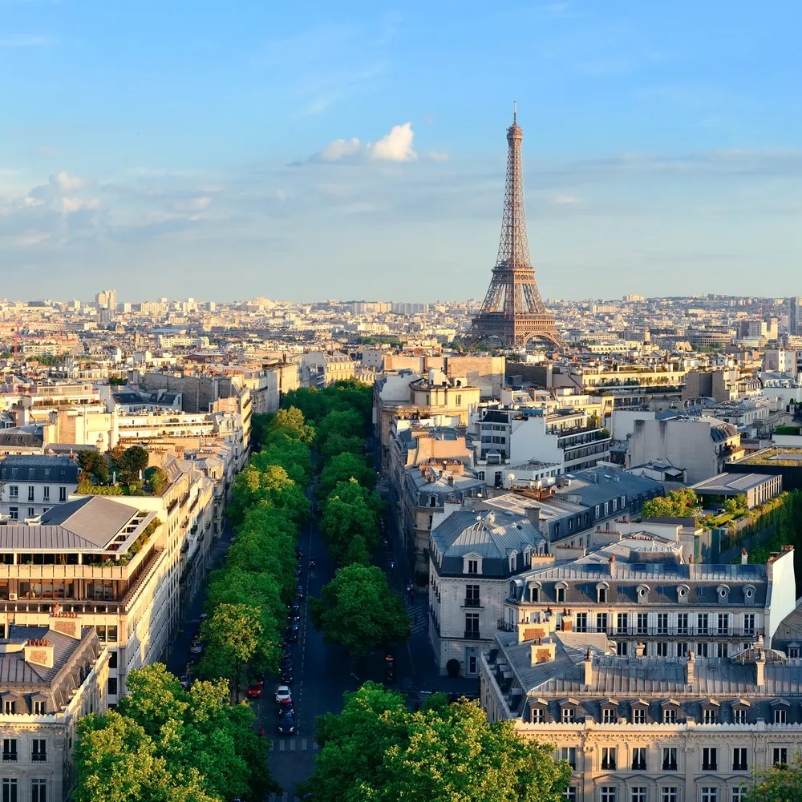
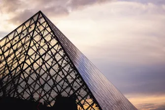
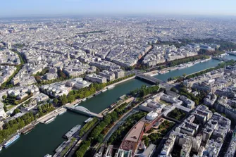
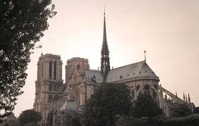

Una ciutat d’amor i cultura
París és coneguda com la ciutat de la llum. Un destí imprescindible per als amants de l’art, la història i la bona cuina.
Des del Louvre fins a Notre-Dame, cada racó de París respira història i elegància. Els seus carrers plens de cafès conviden a perdre-s’hi sense pressa.
No et pots perdre un passeig pel Sena al capvespre, amb la Torre Eiffel il·luminada al fons: una experiència inoblidable.


